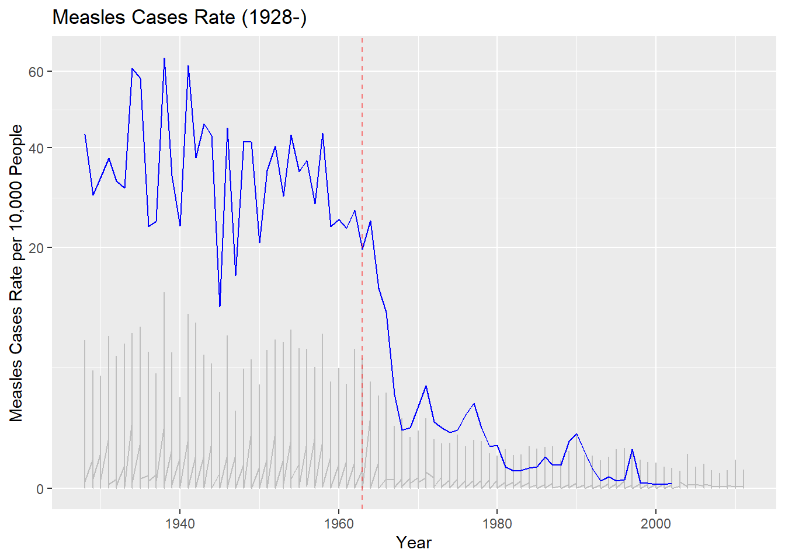
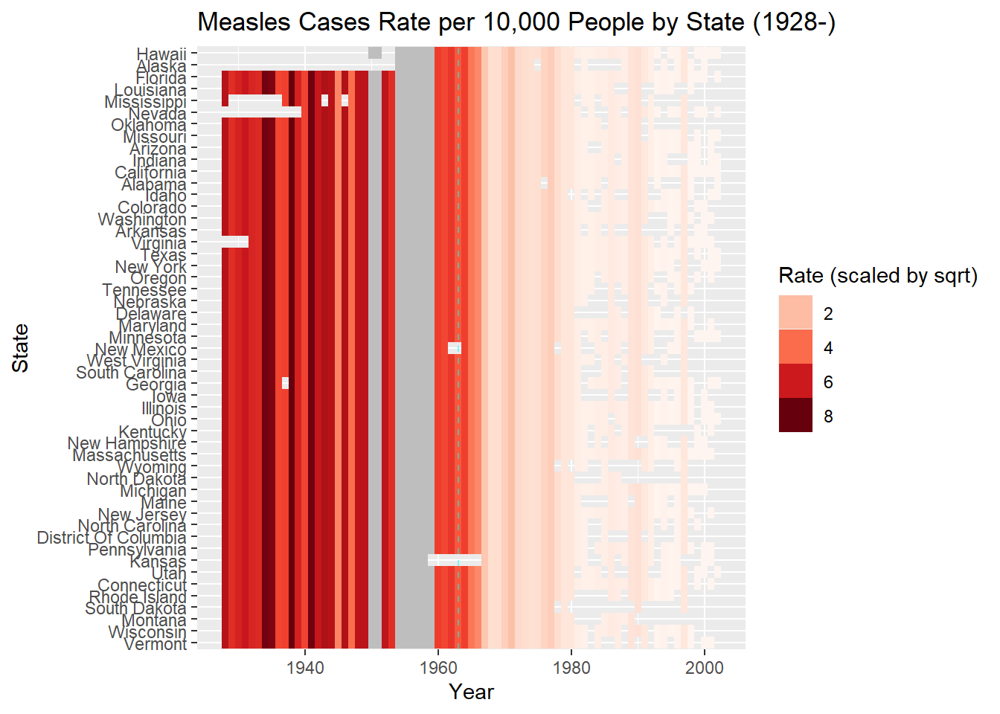

Homework_2
Turning the Tide: How the Measles Vaccine Stopped the Endemic
Of all of the public health triumphs, the story of how vaccines slowed illness and the spread of disease stands as a beacon of success and a testament to the power of immunization. As we delve into the narrative of this groundbreaking vaccine, our journey unfolds against the backdrop of once-rampant outbreaks and societal challenges. With a spotlight on the remarkable decline in measles cases, this report illuminates the transformative impact of the measles vaccine, showcasing how a simple inoculation has emerged as a formidable force in safeguarding communities worldwide. This innovation not only altered the trajectory of a contagious adversary but has also become a symbol of resilience and progress in the realm of preventive medicine.
The earliest recorded account of measles was in the 9th century from a Persian doctor who identified the disease as a separate entity from smallpox. This disease mainly affects young children from 5 to 6 months old with a mortality peak at 3 years of age. However, this deadly disease only became a worldwide problem during the Renaissance, when Europeans started to explore the wider world. Since the epidemic in the 19th century, physicians began to study this disease but it was only in 1911 that it was discovered that this disease was actually a virus. And so the race to stop the spread of this virus began. In 1954, Thomas Peebles and John Enders identified the virus as a morbillivirus, a part of the Paramyxoviridae family – responsible for distemperment in canines and felines, rinderpest in ovines and bovines, and epidemic diseases in dolphins and seals – and the measles virus that we deal with developed from a rinderpest virus which evolved to use humans as hosts without the need for an animal reservoir.
The first vaccine was developed in 1958 by Enders’ team and became licensed in 1963 in the United States and was consequently used worldwide by the World Health Organization (WHO). In the United States, this was a relief to families with young children as the rate of infection was especially high in the 1930s across most states, with another peak in 1960.
This graph looks at the rate of cases per 10,000 people over the 20th century leading into the 21st century. As you can see, the highest rate of cases occurred in the late 1930s, with over 60 cases per 10,000 people. As the population at that time was approximately 130 million people, this means that roughly 2.17 million children were infected at that peak. Rates of infection by state is shown in grey on the bottom of the graph, neatly following the national rate of cases in blue.
After the introduction of the vaccine (marked by the red dashed line), the rates of infection began to taper off, sharply decreasing just after 1963 when enough people received the vaccine. We can see this more visually in the heatmap below, where the rate of cases are shown per state over the years. Florida, with the highest max rate of cases, is at the top of the plot with states following in a descending order based on rate.

The highest rate is distinguished by the dark red color and the lowest rate is colored by the pale pink color. We are easily able to determine that after the vaccine is released to the general population in 1963 (dashed cyan line) there is a rapid downtrend in the rate of cases across every state. It is necessary to note that there is missing data (in grey) as there were weeks were there was no recorded data for the number of cases. Unfortunately, the data set was not clear if this was due to having no cases that week or if the cases were simply not reported.
The development and widespread implementation of the measles vaccine stand as a pivotal milestone in the history of medicine, marking a transformative moment in the global fight against infectious diseases. The vaccine, introduced in the mid-20th century, has played a crucial role in drastically reducing the incidence and impact of measles, once a pervasive and highly contagious disease. Its success not only highlights the effectiveness of vaccination in preventing illness but also underscores the potential for vaccines to bring about significant public health advancements.
In the contemporary context, the importance of vaccinations remains as critical as ever. Vaccines not only protect individuals from potentially severe and preventable diseases but also contribute to community immunity, safeguarding those who may be more vulnerable, such as infants, the elderly, and individuals with compromised immune systems. As evidenced by the ongoing efforts to combat infectious diseases globally, including recent challenges like the COVID-19 pandemic, vaccinations continue to be a cornerstone of public health strategies, serving as a powerful tool to mitigate the spread of diseases and save lives. Unfortunately, recent times have seen a backslide in disease prevention with the refusal to vaccinate due to misinformation and lack of general knowledge. As such viruses, such as Polio – a previously thought eradicated virus – has seen a reemergence in recent times.
In conclusion, the impact of the measles vaccine on public health serves as a testament to the broader significance of vaccinations in preventing and controlling infectious diseases. Embracing and promoting vaccination efforts remains a vital component of safeguarding individual and community health, reflecting a commitment to the well-being of current and future generations. As we navigate the complexities of evolving health challenges, the lessons learned from milestones like the measles vaccine underscore the enduring importance of vaccination in the pursuit of a healthier, more resilient global society.